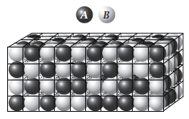

Uke 8 – Løsninger og blandinger#
Oppgave 1. Ideelle gasser og ideele blandinger.#
a) Som repetisjon, hva er en ideell gass? Hva ville \({\Delta}H_{mix}\) vært for blanding av to ideelle gasser?
b) Hva er en ideell væske? Hva er \({\Delta }H_{mix}\) for en ideell væske?
c) Hva er drivkraften for miksing av to ideelle væsker?
d) Hva er henholdsvis Raoult og Henry’s lov? Når gjelder hver av de, når bruker man hvilken?
e) Når sier man at en væskeblanding er ideell, utifra Raoults lov? Kom med et par eksempler på systemer med to væsker som oppfører seg tilnørmet ideelt.
f) Se for dere et stort volum med vann ved \(25 ^{\circ} C\) (\(10 \, L\) for eksempel). Når \(1 \, mol\) vann videre tilsettes så øker volumet med \(18 \, cm^3\), og man sier derfor at det molare volumet til vann er \(18 \, cm^3\). Men når man tilsetter \(1 \, mol\) vann til et stort volum med etanol (\(10 \, L\) for eksempel) ved \(25 ^{\circ} C\) øker volumet kun med \(14 \, cm^3\). Hvorfor er det slik? Hva kommer dette av?
g) Er systemet i f) en ideell væske?
h) Hva er partielt molart volum? Hvordan vil det være for en ideell væske?
Oppgave 2#
En blanding består av etyliodid og etylacetat. Damptrykket (\(p_I\)) av etyliodid(I) over blandingen som funksjon av molbrøken \(x_I\) er ved \(50.0 °C\) målt til:
(\(x_I\)) |
(\(p_I\)) / \(torr\) |
|---|---|
1.00 |
353 |
0.909 |
322 |
0.825 |
296 |
0.548 |
213 |
0.235 |
105 |
0.109 |
52.7 |
0.0579 |
28.0 |
0.0 |
0 |
a) Tegn \(p_I\) som funksjon av \(x_I\). Følger denne damptrykkskurven Raoults lov? Hvorfor følger den, evt hvorfor følger den ikke?
b) Finn Henrys lov konstanten \(K_I\) for etyliodid.
Oppgave 3: Termodynamikken til ikke-ideelle løsninger#
I denne oppgaven skal vi se på blandingsentalpi og blandingsentropi for ikke-ideele væsker, fra et mikroskopisk perspektiv og antar en gittermodell. Vi tenker oss et 3D-gitter med N plasser, alle plassene er fylt med 1 molekyl av typen A eller B, og vi har \(N_A\) molekyler av typen A og \(N_B\) molekyler av typen B, og vi vet at \(N=N_A+N_B\). See figuren under: Vi antar videre at interaksjonsenergien mellom to A molekyler er \(\epsilon_{AA}\), mellom to B molekyler er \(\epsilon_{BB}\) og mellom et A og et B molekyl er den \(\epsilon_{AB}\). Vi kan anta at alle interaksjonsenergiene er negative (tiltrekkende), men IKKE at de er like \(\epsilon_{AA} \neq \epsilon_{BB} \neq \epsilon_{AB}\)

a) Hva er blandingsentropien, \(\Delta S_{mix}\), for dette systemet? Bruk Boltzmanns deffinisjon av entropi \(S=k_B\ln{(\Omega)}\), Sterlings approksimasjon \(\ln{(N!)}\approx N \ln{(N)}-N\), og når er blandingsentropien størst?
b) Vi kan si at den indre energien til blandingen er gitt ved:
der \(m_{AA}\), \(m_{BB}\) og \(m_{AB}\) er henholdsvis antall bindinger mellom AA, BB og AB i blandingen. Disse vet vi ikke sånn uten videre, og må finne de utifa \(N_A\) og \(N_B\). Utifra gittermodellen, antar vi at hver partikkel har \(z\) naboer.
Diskuter hvorfor \(z\cdot N_A=2\cdot m_{AA} + m_{AB}\) og \(z\cdot N_B=2\cdot m_{BB} + m_{AB}\)
c) Vis at med definisjonene over kan vi skrive at den indre energien til blandingen som:
og at dette kan skrives om til:
d) Nå må vi bare finne \(m_{AB}\). Dette gjør vi ved å anta at A og B partiklene er fordelt mest mulig tilfeldig. Dette kalles for Mean-Field eller Bragg–Williams approximasjonen.
Hvis vi antar at vi har en A partikkel på en gitt gitterplass, hva er sannsynligheten for å finne en partikkel B på naboplassen rett til høyre for A partikkelen? Husk at vi har \(N_B\) partikler av type B av totalt \(N\) partikler.
Hvis hver partikkel har “z” naborer, hvor mange av naboene til en gitt partikkel A, vil i snitt være av typen B?
Hvis vi har \(N_A\) partikler tilfeldig fordelt i væsken, hvor mange A-B interaksjoner (\(m_{AB}\)) vil vi da ha totalt?
e) Hvordan ser utrykket for den indre energien nå? Bruk svaret i oppgave d) og at:
f) Vi er oftest ineterressert i endringen i indre energi for en blandet sluttilstand (\(N_A\) partikler av type A blandet sammen med \(N_B\) partikler av type B blandet), fra 2 ublanede løsninger.
Bruk utrykket for den indre energien dere fant i oppgave e) og vis at den indre energien \(U_A\) til en ren væske med kun \(N_A\) a partikler av type A er gitt ved:
Hva er \(U_B\)?
Hva er \(\Delta U_{mix}=U_{AB}-U_A-U_B\)?
g) Hvis vi antar konstant trykk og at vi ikke får noe endring av totaltvolum ved å blande en ren løsning av A med en ren løsning av B, kan vi skrive at:
Forklar hvorfor?
h) Nå har vi funnet utrykk for \(\Delta S_{mix}\) og for \(\Delta H_{mix}\), når vi blander to løsninger. Hva blir da \(\Delta G_{mix}\)?
Regneoppgaver#
Oppgave 1#
Hovedkomponentene i luft er \({N_2}_{(g)}\) og \({O_2}{(g)}\). 78 % \({N_2}_{(g)}\) og 22% \(O_2\) blandes ved \(298 \, K\), beregne:
a) molar Gibbs blandingsenergi, \(\Delta _{mix}G_m\)
b) molar Gibbs blandingsentalpi, \(\Delta _{mix}H_m\)
c) molar blandingsentropi, \(\Delta _{mix}S_m\)
Er blandingsprosessen spontan? Hva er drivkraften for at komponentene blandes?
Oppgave 2#
a) Finn konstanten i Henrys lov for en blanding som består av \(75.0 \, g\) toluen (molar masse \(92.1 g/mol\)) (væske A) i en løsning med \(1000 g\) av difenyleter (væske B). Væsken difenyleter (molar masse \(170.2 \, g/mol\)) har et damptrykk på \(430 \, Torr\) over denne løsning og totaltrykket er \(520 \, Torr\). Damptrykket for en ren væske A er \(650 \, Torr\).
b) Følger væske A Raoults lov? Forklar grunnen til svaret du får.
c) Hva blir konstanten i Henrys lov om løsningen er ideell?
Oppgave 3#
En \(1.0 \, m\) løsning av \(NaCl_{(s)}\) i vann gir en frysepunktnedsettelse på \(3.7 \, K\). Hvordan kan man forklare denne observasjonen? Frysepunktnedsettelseskoeffisienten for vann er \(1.86 \, K.kg.mol^{-1}\).
Oppgave 4#
I en blanding av aceton og kloroform er molbrøken av kloroform \(0.290\). De partielle molare volum av komponentene er bestemt:
Beregn volumet av \(1.000 \, kg\) blanding.
Oppgave 5#
Beregne det osmotiske trykket som oppstår når \(6.00 \, g\) urea, \((NH_2)_2CO\), løses i vann til \(1.00 \, dm^3\) løsning ved \(27.0 ^{\circ}C\). Bruk van’t Hoffs ligning.
Oppgave 6#
Beregn frysepunktet for \(200 \, g\) vann som er tilsatt \(2.50 \, g\) sukrose \(C_{12}H_{22}O_{11}\). Kommenter svaret og gi en forklaring.